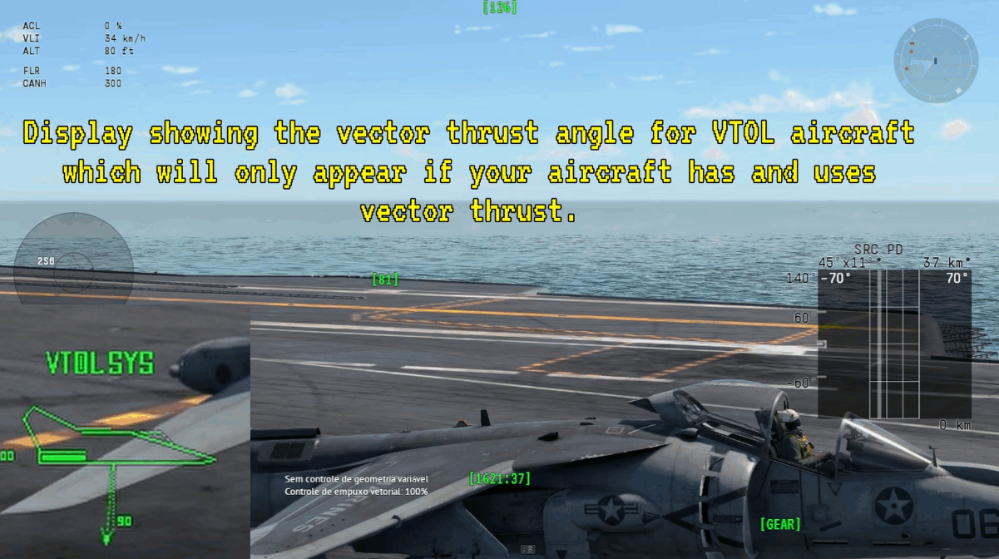

HMD Warthunder is an overlay system for Warthunder that puts the most important flight information directly on your screen, just like a Helmet-Mounted Display (HMD). It also features Betty-style voice alerts, so you never miss a critical detail during the game. With a dynamic display, it only shows what really matters, making your flight experience more practical and immersive.
The app works using Electron as a base, utilizing JavaScript, HTML, and CSS. It collects information from Warthunder's localhost and displays it on the screen.
Download
1.3.9
Betty Improvement:
Added landing approach sounds: 200, 100, 50, 40, 30, 20, 10.Alerts will only play when the landing gear is down to avoid unnecessary warnings. It will also only function if the aircraft supports a radio altimeter;
otherwise, it will not be used to avoid confusion. Added a caution sound alert when one of the engines stops working..
1.3.5
Betty! !
Updated fuel calculation redundancy.
Added "Bingo, fuel low, altitude, sink rate" to Betty.
Radar altitude.
Feedback sound to notify that the engine is 100% on.
About Future?
Versions for Linux and Mac
I will be working on it, but I can't guarantee full functionality as I don't have a way to test it.